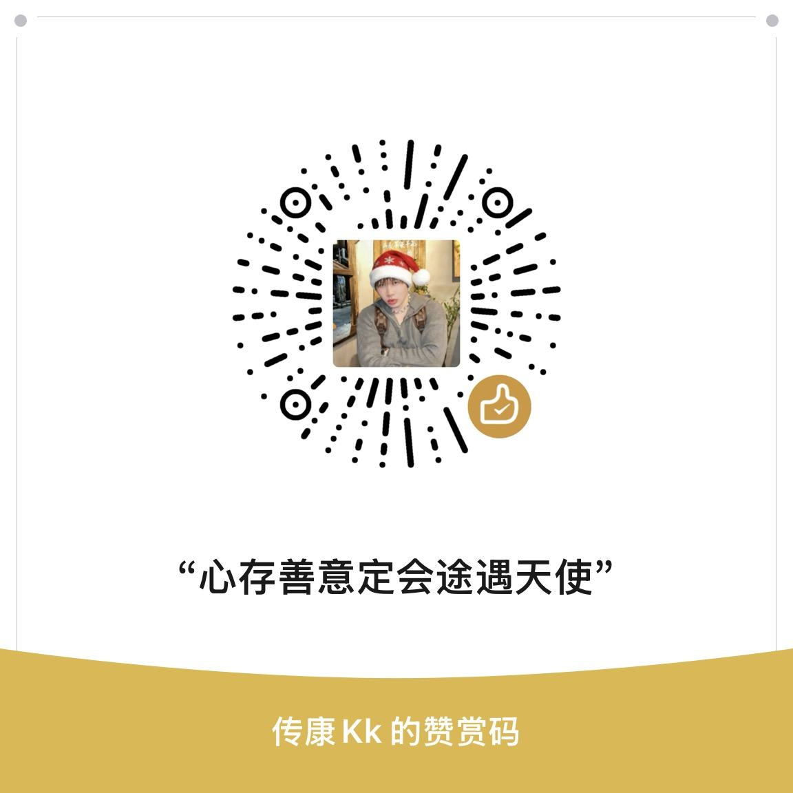

THE ORACLE · 灵台问卜
一念既起万象有应
先定心念，再择法门。让卦象、牌阵与时序缓缓显形，而不是匆忙得到一个答案。
壹定念贰取象叁明断
先定心念，再择法门。让卦象、牌阵与时序缓缓显形，而不是匆忙得到一个答案。
若玄机子为君解惑启智、点明方向，可随喜结缘以资算力与系统维护。

屏息凝神，默念所求之事
轻触木鱼，息心澄虑，福慧双增
版本：v8.3 灵台校勘版
融汇东方传统易学、四柱八字、梅花六爻与西方灵犀塔罗，为问卜者提供客观、富于哲思与可行建议的推演指导。
开发者：传康KK · 无偿开发，免费使用